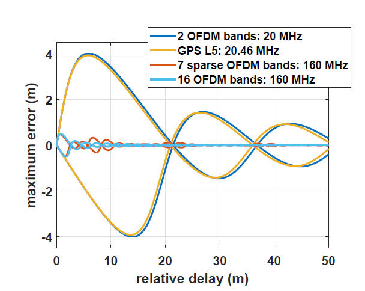
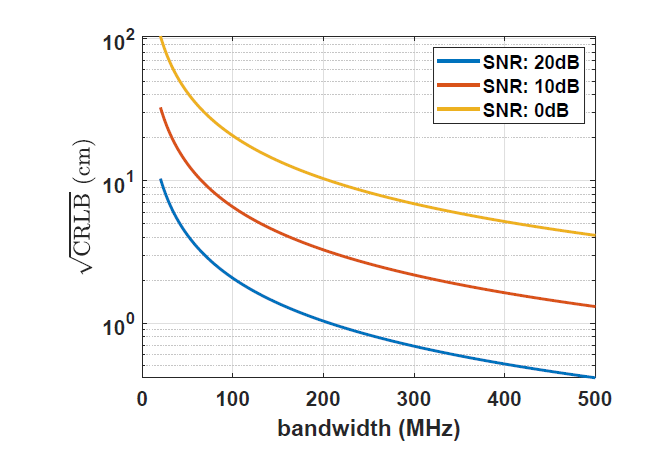
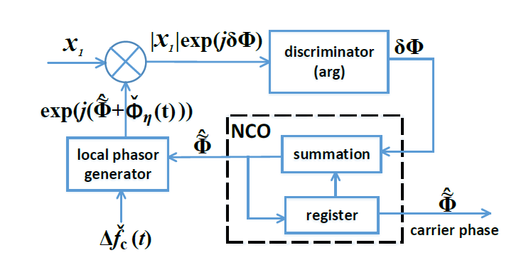
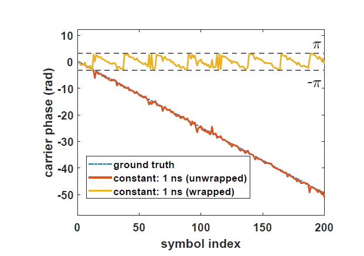
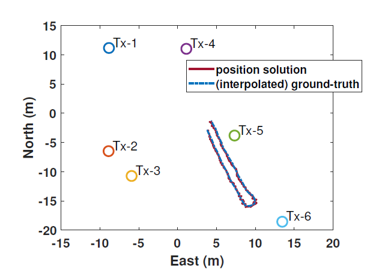
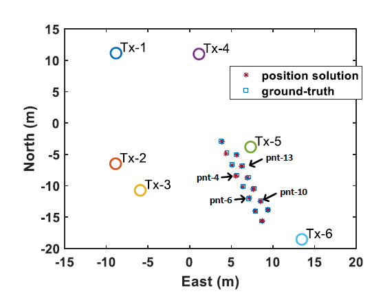
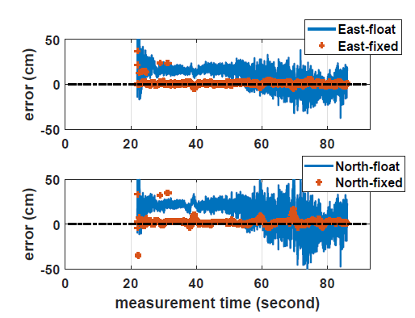

High Accuracy Terrestrial Positioning Based on Time Delay and Carrier Phase Using Wideband Radio Signals
Han Dun, doctoral defense: 4 October, 2021
GNSS can provide accurate position solution in open area...
However, its positioning accuracy becomes poor in urban environment,
where accurate position is most needed.
Requirements for a typical terrestrial positioning system
-
radio transmitters should be synchronized in time and frequency
-
transmitter position should be measured a priori
-
sub-meter positioning accuracy is required
-
large (virtual) signal bandwidth is needed to improve the resolvability of different paths and overcome multipath effects
SuperGPS: accurate timing and positioning through an optical-wireless distributed time and frequency reference
Blue line: existing optical communication infrastructure, green square: radio transmitters, red square: central atomic clock
The work presented in this thesis is carrierd out in the context of 'SuperGPS' project
This thesis covers the following aspects:
-
How can a ranging signal be designed by occupying little sprectral resources, but provides high ranging accuracy?
-
how can carrier phase be estimated from periodically transmitted ranging signal from an asynchronized receiver?
-
How can integer nature of carrier phase cycle ambiguities be retrieved, so that the ambiguity-fixed solution can be obtained.
-
what is the positioning accuraccy that prototype system can provide?
Signal bandwidth and ranging accuracy


ranging precision is justified by Cramer-Rao lower bound (CRLB)
large signal bandwidth = high ranging accuracy
virtual signal bandwidth: bandwidth between two signal bands at the edges.
large virtual signal bandwidth = high ranging precision
Carrier phase tracking

$x_1$: complex propagation gain of Line-of-Sight (LoS)
$\Delta\check{f}_c(t)$: carrier frequency offset estimate, which can be obtained via Moose's symbol, time-delay-based positioning model (i.e., clock offset)
Example: unwrapped carrier phase (red line), in which only initial carrier phase ambiguit is preserved
- single snapshot measurements set taken from all transmitters
- not need to be updated in real-time, unless the transmitters are restarted or the operation condition (e.g., temperature) has changed significantly
- by taking the difference between the current carrier phase estimates and the corrections, the transmitter-dependent parameters eliminated

source: C. Diouf et. al. Demonstration of a decimeter-level accurate hybrid optical-wireless terrestrial positioning system .
Tx antenna
Tx geometry

mounted on car

mounted on trolly



Overall RMSE: 9.75 cm (East) 9.64 cm (North)

bias (due to multipath): decimeter to centimeter
precision : less than 2 cm


Overall RMSE:
- ambiguity-float solution: 14.6 cm (East), 18.1 cm (North)
- ambiguity-fixed solution (using correction): 1.7 cm (East), 2.7 cm (North)
RMSE of position solution in East and North direction
| run no. | 1 | 2 | 3 | 4 | 5 | |
|---|---|---|---|---|---|---|
| relative
positioning |
E | 1.5 | 1.5 | 1.4 | 1.9 | 1.5 |
| N | 3.2 | 2.7 | 2.2 | 1.8 | 3.0 | |
|
PoA float |
E | 14.6 | 12.2 | 2.9 | 3.2 | 6.9 |
| N | 18.1 | 14.8 | 2.9 | 4.2 | 3.7 | |
|
PoA fixed w/ corrections |
E | 1.7 | 1.8 | 1.3 | 1.8 | 2.4 |
| N | 2.7 | 3.8 | 2.8 | 3.4 | 3.2 | |
| n_fx/n_ft (%) | 92.4 | 97.7 | 100 | 93.4 | 87.7 | |
|
PoA fixed w/o corrections |
E | 33.9 | 19.1 | 6.9 | 12.6 | 8.8 |
| N | 42.4 | 15.0 | 3.0 | 7.1 | 5.1 | |
| n_fx/n_ft (%) | 23.8 | 26.7 | 90 | 16.1 | 51.6 | |
I would like to thank...

Christian Tiberius

Gerard Janssen

Cherif Diouf
also thank the following institues


THE END
Question? contact me via h.dun@tudelft.nl
More information about SuperGPS? please click here